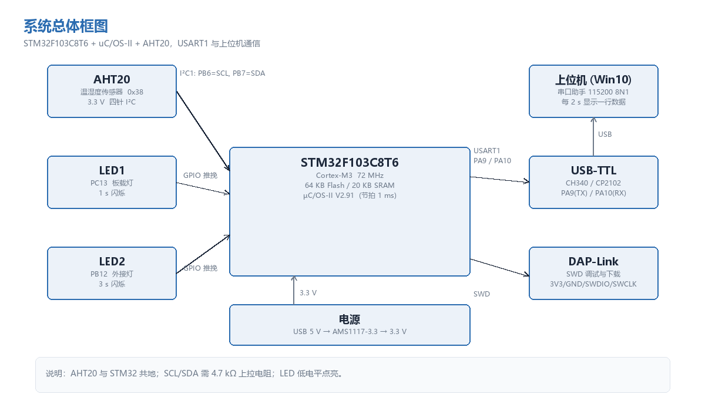
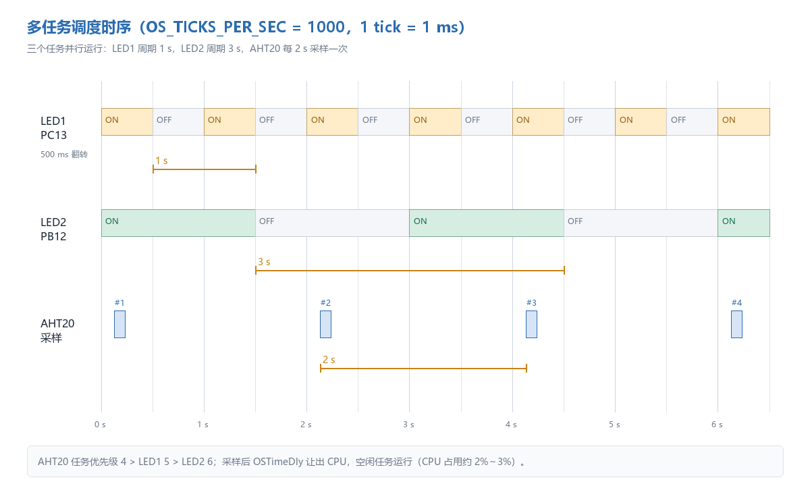
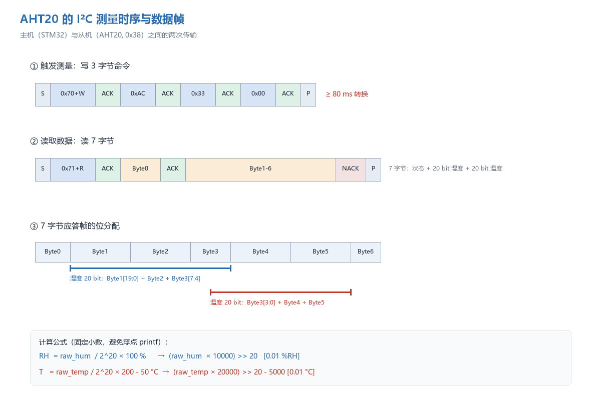
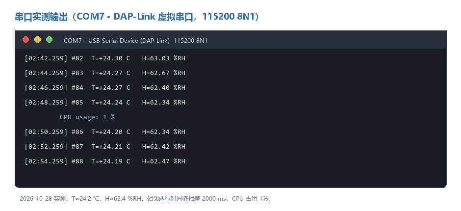

课程作业整理，工程、报告与在线博客已开源。
平台建议：CSDN / 知乎；标签：STM32、uC/OS-II、RTOS、I2C、AHT20。
一、为什么选 uC/OS-II
作业要求“以 uC/OS 为例”移植到 STM32F103C8T6，建 3 个任务。uC/OS-III 功能更全，但源码大、
配置项多，初学移植容易在中断和启动文件上绕晕；uC/OS-II V2.91 结构清晰，Cortex-M3 的移植只涉及
os_cpu.h、os_cpu_a.asm、os_cpu_c.c 三个文件，更适合把“移植”这件事讲清楚。
最终工程：
- MCU：STM32F103C8T6，72 MHz，64 KB Flash，20 KB SRAM；
- 内核：uC/OS-II V2.91，节拍 1000 Hz（1 tick = 1 ms）；
- 任务：LED1（1 s）、LED2（3 s）、AHT20 采集（2 s）；
- 外设：I2C1（PB6/PB7）接 AHT20，USART1（PA9/PA10）115200 8N1 输出。

二、移植其实就三件事
1. 数据类型与临界区
Cortex-M3 是 32 位，OS_STK 用 unsigned int，栈从高地址向低地址增长（OS_STK_GROWTH=1）。
临界区用方法 3：保存 PRIMASK、关中断、退出时恢复。
#define OS_CRITICAL_METHOD 3
#define OS_ENTER_CRITICAL() {cpu_sr = OS_CPU_SR_Save();}
#define OS_EXIT_CRITICAL() {OS_CPU_SR_Restore(cpu_sr);}
OS_CPU_SR_Save 在汇编里就是 MRS R0, PRIMASK; CPSID I; BX LR。
2. PendSV 上下文切换
Cortex-M3 异常入口会自动压 R0–R3、R12、LR、PC、xPSR，所以 PendSV 里只需保存 R4–R11：
MRS R0, PSP
SUBS R0, R0, #0x20
STM R0, {R4-R11}
LDR R1, =OSTCBCur
LDR R1, [R1]
STR R0, [R1] ; OSTCBCur->OSTCBStkPtr = SP
切换时恢复新任务的 R4–R11、MSR PSP，并 ORR LR, LR, #0x04 让异常返回使用 PSP。
OSStartHighRdy 负责把 PendSV 设为最低优先级、清 PSP、置 OSRunning=TRUE，再触发第一次切换。
3. SysTick 系统节拍
void OS_CPU_SysTickHandler(void)
{
OSIntEnter();
OSTimeTick();
OSIntExit();
}
void OS_CPU_SysTickInit(void)
{
(void)SysTick_Config(SystemCoreClock / OS_TICKS_PER_SEC);
NVIC_SetPriority(SysTick_IRQn, (1UL << __NVIC_PRIO_BITS) - 1UL);
}
三、踩坑记录
坑 1：源码里的反斜杠 include
从示例工程拷来的 uC/OS-II 源码里写死了：
#include <uCOS-II\Source\ucos_ii.h>
#include <uCOS-II\Ports\ARM-Cortex-M3\RealView\os_cpu.h>
换目录后直接报“cannot open source input file”。改成 <ucos_ii.h>、<os_cpu.h>，
再把 Source、Ports 加进 Include Path 即可。
坑 2：SysTick 被 HAL 占用，且优先级是 0
HAL_Init() 默认把 SysTick 优先级设为 0（最高），而 uC/OS-II 要求节拍中断优先级最低。
解决办法是共用 SysTick，但在 OS_CPU_SysTickInit() 里把优先级改成 15，并在中断里同时调用
HAL_IncTick() 和 OS_CPU_SysTickHandler()：
void SysTick_Handler(void)
{
HAL_IncTick();
OS_CPU_SysTickHandler();
}
这样 HAL_Delay() / HAL 超时在 RTOS 下仍然可用；但任务里不要用 HAL_Delay() 做长延时，
要改用 OSTimeDly() 主动让出 CPU。
坑 3：链接报 Undefined symbol OSTaskReturnHook
uC/OS-II 2.91 比 2.86 多了一个“任务函数意外返回”钩子。2.86 的 os_cpu_c.c 里没有这个函数，
补一个空实现即可：
void OSTaskReturnHook(OS_TCB *ptcb) { (void)ptcb; }
坑 4：PendSV 优先级不是最低
OSStartHighRdy 会把 PendSV 设为 0xFF，但如果你在别处重新配置了 NVIC，要保证 PendSV 仍然最低，
否则切换可能发生在中断嵌套中间，出现“任务栈看起来被破坏”的怪现象。
四、三个任务怎么排
| 任务 | 优先级 | 周期 | 工作 |
|---|---|---|---|
| Start | 3 | 一次 | 打印启动信息、OSStatInit()、创建任务、删除自己 |
| AHT20 | 4 | 2 s | 读传感器、串口输出 |
| LED1 | 5 | 1 s | 翻转 PC13 |
| LED2 | 6 | 3 s | 翻转 PB12 |
原则：周期越短、实时性越高，优先级越高。AHT20 一次读取要占 I²C 约 1 ms、转换 80 ms，
放在 LED 之前，保证采样时刻；转换期间用 OSTimeDly(80) 让出 CPU，LED 照常闪。

五、AHT20：软 I²C 与硬 I²C 都实现一遍
AHT20 地址 0x38（写 0x70、读 0x71）。流程：
- 上电等 40 ms，读状态字节，bit3（0x08）为 0 时写
0xBE 0x08 0x00校准； - 写
0xAC 0x33 0x00触发，等 80 ms； - 读 7 字节，Byte0 状态，Byte1–3 湿度 20 bit，Byte3 低 4 bit + Byte4–5 温度 20 bit。
换算用定点，避免浮点 printf：
hum_centi = (raw_hum * 10000u) >> 20; /* 0.01 %RH */
temp_centi = (raw_temp * 20000u) >> 20 - 5000; /* 0.01 ℃ */
这里我最初把温度系数写成了 2000，结果 25 ℃ 算成 −42 ℃。用
raw_temp=394999回代：
394999×20000>>20 = 7534，减 5000 得 2534，即 25.34 ℃，才是对的。公式一定要用数据手册的
边界值验证。
软件 I²C 用 GPIO 开漏模拟：SCL 低电平期间改 SDA，SCL 高电平期间采样；第 9 个时钟读 ACK，
最后一个字节发 NACK。半周期延时 40 次 __NOP()，约 2.5–3 µs，SCL 约 150–200 kHz。硬件 I²C 用
I2C1 400 kHz，直接调 HAL_I2C_Master_Transmit/Receive，两种实现通过宏切换：
#define AHT20_USE_SOFT_I2C 0 /* 0 = 硬件 I2C1，1 = 软件模拟 */

六、把第 3 个任务改成采集
任务一阶段第 3 个任务每 2 s 发“hello uc/OS! 欢迎来到 RTOS 多任务环境！”；任务三要求改成
每 2 s 采集温湿度。工程用 APP_TASK3_SENSOR 宏保留两种形态（0 = 问候语，1 = 采集），
启动横幅也随之变化，一份代码能复现两个阶段。
周期补偿：
t0 = OSTimeGet();
/* 采集 + 输出 */
elapsed = OSTimeGet() - t0;
if (elapsed < 2000) OSTimeDly(2000 - elapsed);
串口用互斥量保护（启动任务和采集任务都会打印）：
OSMutexPend(uart_lock, 0, &err);
vsnprintf(buf, sizeof buf, fmt, ap);
HAL_UART_Transmit(&huart1, (uint8_t *)buf, len, 100);
OSMutexPost(uart_lock);

实物实测（DAP-Link 虚拟串口 COM7，115200 8N1）：环境约 24.2 ℃ / 62.4 %RH，
相邻两行时间戳相差 2000 ms，CPU 占用 1%。读数会随环境变化。
七、编译结果
Program Size: Code=17988 RO-data=1132 RW-data=72 ZI-data=7048
0 Error(s), 0 Warning(s)
Flash 约 18.7 KB（29.2%），RAM 约 7.0 KB（34.8%），内核约 6 KB，HAL + 驱动 + 应用约 13 KB。
硬件 I²C 与软件 I²C 两种配置都能独立编译通过。
八、总结
移植 uC/OS-II 不难，难在细节：SysTick 与 HAL 共用、PendSV 优先级、2.91 的新钩子、栈大小、
临界区长度。把这三件事（临界区、上下文切换、系统节拍）做对，内核就能跑；剩下的都是配置和调试。
I²C 部分建议先用软件模拟把时序“看见”，再换硬件外设，对比一次就真正理解了协议。
仓库与报告
- GitHub：
https://github.com/jkahwbdu/stm32-rtos-aht20-task - 在线博客：https://jkahwbdu.github.io/stm32-rtos-aht20-task/
- 实验报告：
docs/STM32_RTOS_AHT20实验报告.pdf - 参考：
- 野火《STM32F103 开发指南》第 23 章 I²C 读写 EEPROM
- AHT20 产品手册（奥松电子）
- Micrium uC/OS-II V2.91 源码
- STM32F10xxx Cortex-M3 编程手册（PM0056）
配图在工程
docs/images/下，上传 CSDN 后在编辑器里重新插入即可。